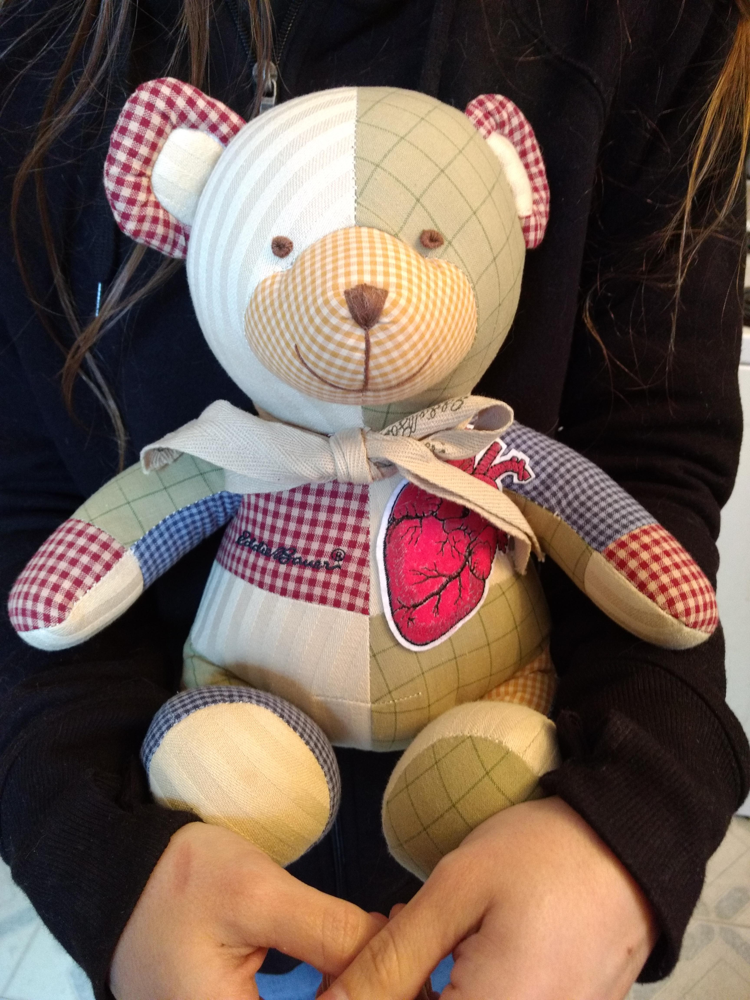

SCP-2295 in an inactive state
Item #: SCP-2295
Object Class: Safe
Special Containment Procedures: SCP-2295 is to be kept in a standard containment locker within Storage Wing-25 in Site-37.
Personnel with Level 3 or higher security clearance are authorized to perform tests on SCP-2295 after filling out the appropriate paperwork. Please contact Dr. Gergis if required access to SCP-2295 is expected to exceed twenty-four (24) hours.
Description: SCP-2295 is a patchwork stuffed bear, approximately 0.46m from 'head' to 'foot,' and stuffed with synthetic fiber and cotton. SCP-2295 has a small, anatomically correct pin of a heart on the left side of its thorax, and a bow wrapped around its neck. The fabric and color of SCP-2295's patches vary. Tests confirm that no components of SCP-2295 contain any anomalous chemical properties.
SCP-2295 enters an active state when within two (2) meters of a human sustaining major trauma to an organ. When in the proximity of two or more possible subjects, SCP-2295 will invariably choose the youngest subject. SCP-2295 will anomalously produce scissors, white thread, and either sewing needles or a crocheting hook from its mouth and use any fabric and stuffing in close proximity1 to fashion an instance of SCP-2295-1, a patchwork imitation of the subject's organ2. SCP-2295-1 vanishes from sight and the subject falls into a state of unconsciousness. SCP-2295-1 instances then replace the subject's damaged organ via anomalous means. The whereabouts of organs replaced this way are undetermined.
If there is no usable material in close proximity, SCP-2295 will use fabric and stuffing from itself. SCP-2295 regenerates one (1) gram of stuffing every day until completely replacing any lost or used stuffing. Note that fabric used this way does not regenerate, and additional fabric must be placed near SCP-2295 for the purpose of self-mending.
Instances of SCP-2295-1 successfully carry out their respective functions despite the numerous expected biological, chemical, and medical incompatibilities. Once within the subject, adjacent tissues and veins attach to the imitated organ without observable complications. There have been no cases of rejected SCP-2295-1 instances, and all subjects recorded at the time of writing made full recoveries.
Test Log-2295
Testing approved to test the limitations of SCP-2295. Materials provided within testing chamber.
Addendum-2295: Document 2295 was recovered taped to SCP-2295 inside the site of a crashed mail delivery vehicle. Document-2295 is a red "Get Well" card with the text "KAIROS THE BEAR" written on the front cover.